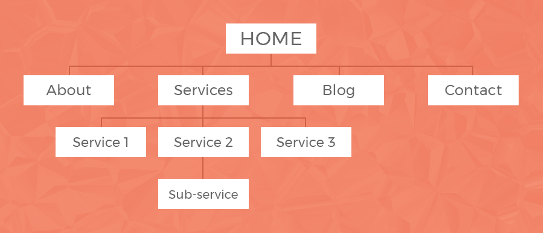

One main aim of our site would be to ensure everyone who applies for a job or is looking to hire someone, is constantly kept in the loop of what is exactly going on with their job position at any given stage. We feel this is a very common problem experienced by individuals including us, therefore giving us a much clearer idea of how to nullify this issue.
Another aim of this project is to make this as efficient as possible for the user. This includes for both employee and employer. The applicants can upload all of their documents and credentials when first signing up for the site and this can be saved for future use. The only time an individual might have to type a long message when using the site would be while answering the questions which are laid out by certain employers, as this differs from field to field.
For employers, they will be able to access the information of their latest applicants of the job advertisements they have posted, as soon as they log onto the site.
(Source: Agente Studio)
The project idea is a recruitment services website and mobile app mostly for students and young people- we believe everyone can benefit from having a casual or part time job- either while studying or to use the role as a springboard to help find other work or roles etc. The site will facilitate job hunting by the target user demographic. The service will also include job advertisements, applicant/employee profile pages and will also provide links to courses for applicants to gain qualifications- for example, if an applicant applied for a job in a warehouse, if the applicant lacks certain qualifications that are required then the site will provide direct links to visit to explore gaining the required qualifications.
On the "Home" page we have the job search bar where job seekers can input the job key words and desired location: the search results will be displayed below the search bar. The job seeker can click on the desired job then it will take the applicant to a more detailed page about the job and if it the job requires certain qualification or licences etc.
The “Contact Us” page is basically a form where the applicants or employer can contact the staff for a specific request or any other matters by filling the form and submitting it. “About us” provides information about the service. The “Employer” allows businesses or individuals to register or sign-in to create a job advertisement and post it. Once an applicant applies for a role, the employer will have access to applicants’ profiles, contact information and their resume etc to review.

(Source: TBH Creative)
The “Applicants” page can only be accessed via registration or signing in- on this page applicants can upload their resumes or other documents like qualifications, certifications or licences. Applicants can also list their skills, work history or any other information they wish to share on their profiles. They can create lists of jobs to apply for later and view all the jobs they have applied for previously.
A user registration page will provide a form where employers and applicants can sign up, to access the services the website services. Users that are already registered can instead sign in and access their profiles and depending on their profile type (applicant or employer) apply for roles or post advertisements, accordingly.
The server side of the website requires programming in PHP for fetching and validating forms, passwords and uploading and deleting other documents, updating and deleting profiles, and returning request with HTTPS, using FTP for file transfer, SMTP for handling emails and Python programming language for web-security, HTTPS, SSL, SFTP and firewall configuration.
A database would be used to store the information created and collected by the website and mobile application; such information would include applicant and employer profiles, contact information, documents, job advertisements and communication to and from the website.
(Source: TBH Creative)
The website will require paid hosting services to provide the server security, firewall and anti-virus services.
The website is incomplete; server-side programming is required for most functions and the database would need to be created and integrated. All the webforms that would be created such as “contact us” form, registration form, sign-in form, forgot my password form and other documents would need to be created and stored on the server. Building the website was difficult as we have limited experience with coding but for now we have created the client-side using HTML, CSS, JavaScript and jQuery.
The website was deemed more achievable for creating a more interactive mock-up as opposed to the mobile application. Artefacts were created for the mobile application and research was done to explore what technology would likely be required if the project was ever to be implemented (as detailed in the “Tools and Technology” section).
Back to home page